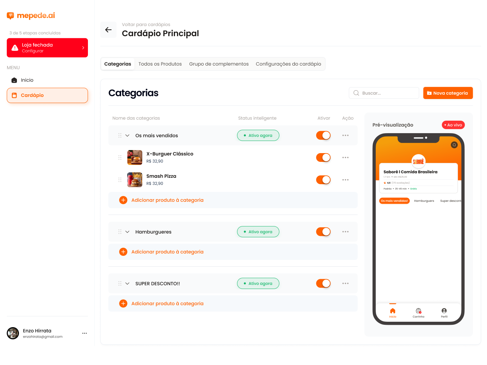
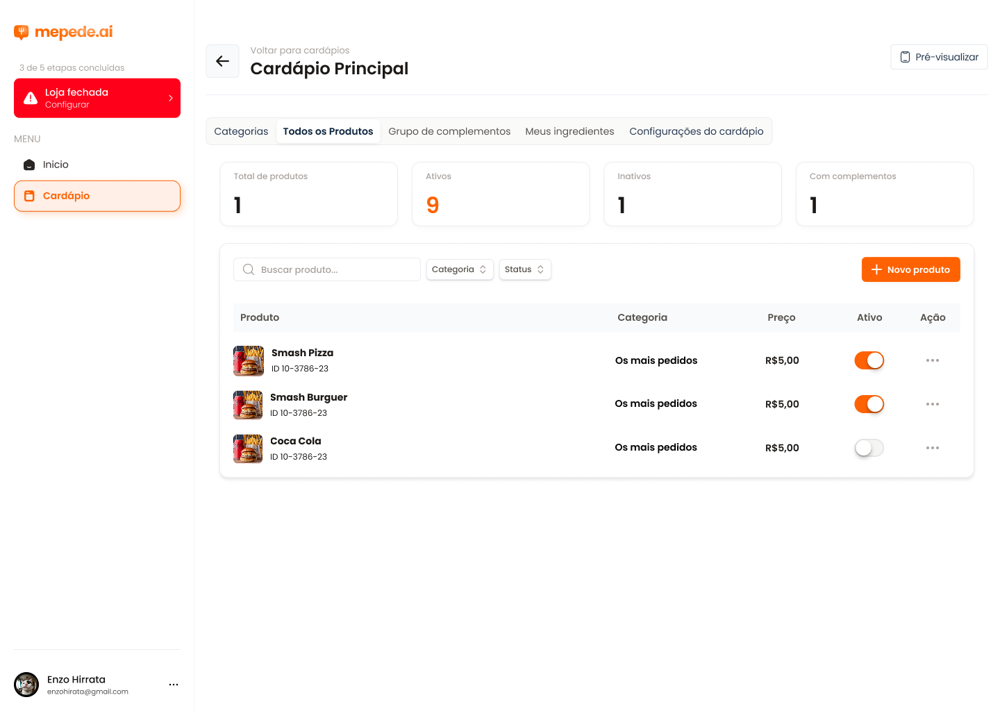
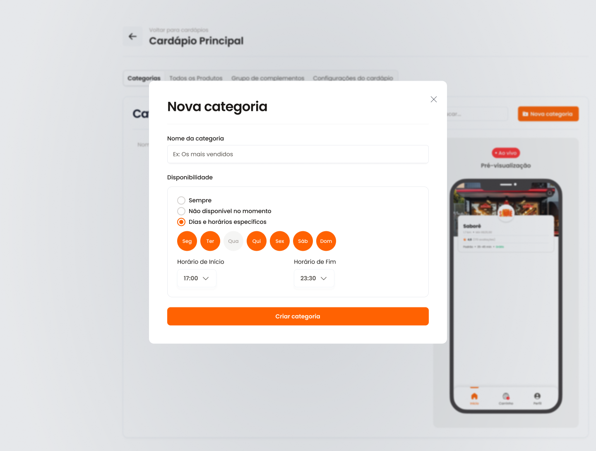
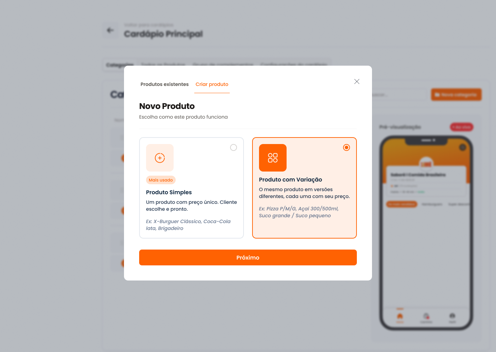
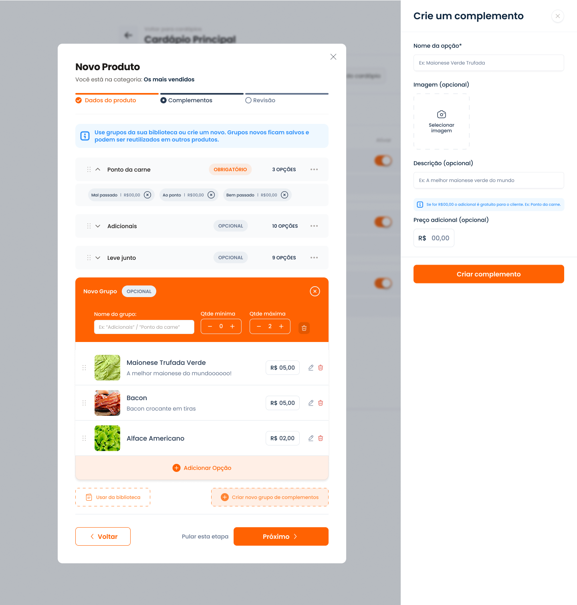
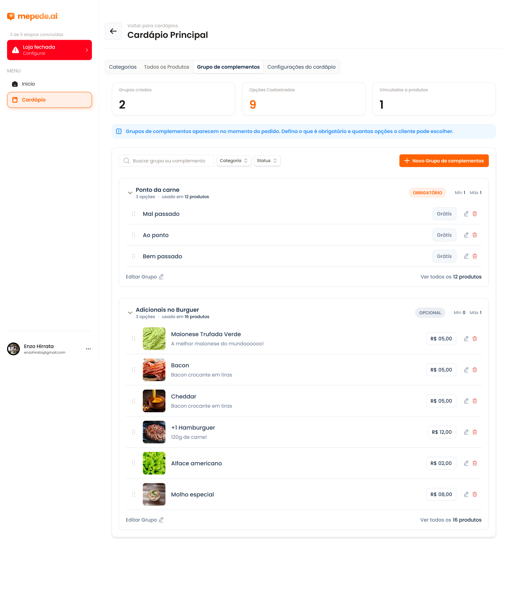

mepede.ai · Painel de cardápio
O que mudou no painel
O cardápio mobile ficou igual. O painel foi refeito para o dono do foodtruck montar o cardápio sem se perder: menos telas, menos janelas, tudo com prévia ao vivo no celular.
6 → 1
telas para criar um produto (tipo + 4–5 etapas → um formulário só)
0
janelas por cima de janelas (antes: modal + painel lateral juntos)
Sempre
prévia do celular visível e clicável, inclusive durante a edição
Desfazer
em toda exclusão, no lugar de modais de “não pode ser desfeito”

01 · ESTRUTURA
Uma tela de trabalho, não uma lista de cardápios
Antes
- Entrar em “Cardápio Digital”, depois abrir o cardápio, depois escolher entre 4–5 abas.
- Link, QR e WhatsApp só na primeira tela.
- “Novo Cardápio” desabilitado, sem explicação.
Agora
- Abre direto no cardápio. As abas viraram itens do menu lateral: Cardápio, Complementos, Loja e link.
- Link (copiar), QR Code e WhatsApp ficam no topo, em qualquer tela.
- “Loja aberta/fechada” virou um interruptor no menu lateral — reflete no celular na hora.
- “3 de 5 etapas” virou um checklist clicável: cada etapa leva direto à ação.


02 · CATEGORIAS E PRODUTOS
Categorias e produtos na mesma tela
Antes
- Duas abas separadas (“Categorias” e “Todos os produtos”) para os mesmos dados.
- Lista em tabela, sem fotos grandes — difícil achar o que falta.
- Prévia do celular estática e só na aba Categorias.
Agora
- Barra de categorias em chips (“Todos” + cada categoria, com contagem e bolinha de status). Clicar filtra os produtos e muda a prévia do celular junto.
- Produtos em cards com foto, preço, desconto, complementos e interruptor “Visível”.
- Produto sem foto mostra “Adicionar foto”; produto sem categoria mostra aviso de que não aparece para o cliente.
- Reordenar categoria com ← →; produto pode estar em várias categorias; “Duplicar”, “Tirar desta categoria” e busca.


03 · CRIAR CATEGORIA
Criar categoria em um passo
Antes
- Modal com nome + 3 opções de disponibilidade logo na criação.
- “Não disponível no momento” repetia o interruptor “Ativar”.
- Excluir abria outro modal com “Essa ação não pode ser desfeita”.
Agora
- “+ Nova categoria”: digite o nome e aperte Enter. No cardápio vazio, sugestões de um clique (Lanches, Bebidas, Combos…).
- Horários ficam em “Nome e horários”, quando precisar: Sempre ou Dias e horários, com o status em tempo real (“Abre sexta às 15:00”).
- A opção repetida saiu: para pausar, use o interruptor “Visível”.
- Excluir pede confirmação no próprio painel, explica que os produtos continuam salvos e permite Desfazer.


04 · CRIAR PRODUTO
De assistente em etapas para um formulário com prévia
Antes
- Escolher “Simples” ou “Com variação” antes de tudo — e o número de etapas mudava (3 ou 4).
- Vai e volta com Voltar/Próximo; a revisão só no final.
- Modal tampava a prévia do celular.
Agora
- Um painel lateral com 4 seções numa rolagem só: Básico, Preço, Complementos, Visibilidade. As abas do topo só pulam para a seção e ficam verdes quando completas.
- Tipo do produto virou a escolha dentro de “Preço”: Preço único ou Varia por tamanho/tipo — dá para trocar a qualquer momento.
- A revisão é o próprio celular ao lado, que mostra o produto enquanto você digita (foto, selo, desconto, tamanhos, complementos).
- Rodapé mostra o que falta (“Falta: nome, preço”); ao salvar com erro, rola até o campo. “Salvar e criar outro” para cadastrar em sequência.
- Desconto calculado automaticamente a partir do “Preço antes”, com aviso se estiver menor que o preço de venda.


05 · COMPLEMENTOS
Complementos sem janela dentro de janela
Antes
- Criar uma opção abria um painel lateral por cima do modal do produto.
- “Qtde mínima/máxima” sem explicar o que o cliente vai ver.
- Tela de grupos longa, uma lista embaixo da outra.
Agora
- No produto: “Usar da biblioteca” (um clique vincula) ou “Criar novo grupo” direto no formulário, com opções em linhas nome + preço. Salvar já vincula e guarda na biblioteca.
- Regra em linguagem simples: Opcional / Obrigatório + “Escolhe até N”, com a frase que o cliente vai ler.
- Ordem dos grupos no produto com ↑ ↓.
- Biblioteca em cards, mostrando onde cada grupo é usado; editar vale para todos os produtos.
- No celular o cliente não consegue adicionar ao carrinho sem as escolhas obrigatórias, e o limite máximo é respeitado.
06 · VÁRIOS CARDÁPIOS
Mais de um cardápio sem mudar de tela
Antes
- Uma tela só para a lista de cardápios, com o botão “Novo Cardápio” desabilitado.
- Não ficava claro qual cardápio o cliente via em cada horário.
Agora
- No topo da tela do Cardápio aparecem os cards “Seus cardápios”, cada um com o horário, o status e quantas categorias e produtos tem. Clicar troca o cardápio em edição e a prévia do celular junto.
- “Novo cardápio” pode começar em branco ou copiar as categorias de outro cardápio.
- Cada cardápio tem as próprias categorias e horários. Produtos e complementos são compartilhados: mudar o preço do X-Burguer muda em todos os cardápios. O card do produto avisa “Também em: …”.
- Um selo mostra qual cardápio o cliente vê agora. O link continua o mesmo; vale o primeiro cardápio da lista que estiver no horário.

07 · PRÉVIA E DETALHES
Prévia interativa e o resto
- Celular interativo: trocar categoria, abrir produto, escolher tamanho e complementos, quantidade, carrinho, taxa de entrega, pedido mínimo e loja fechada.
- Categorias fora do horário, desligadas ou vazias somem do celular, com um aviso de quantas estão ocultas.
- Adicionar existente virou painel lateral com seleção múltipla e busca.
- Loja e link: nome, tempo, taxa, pedido mínimo e endereço do link — tudo aparece no topo do cardápio do cliente.
- Tudo fica salvo no navegador. Em “Loja e link” dá para Começar do zero (testar o fluxo inteiro) ou Restaurar exemplo.
Fora do escopo deste protótipo: login, arrastar para reordenar e integração com PDV. O SKU saiu do formulário principal — dá para voltar como campo avançado se ele usar PDV.